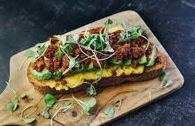

Ideal Breakfast

Description
The most delicious filling breakfast, you'll never get sick of it!
Ingredients
- pasteured eggs
- chorizo
- avocado
- cheese
Steps
- heat up a pan with a small amount of avocado oil
- add chorizo to pan and break up into small pieces
- once chorizo has browned, break eggs into the pan
- mix it all up together
- add to avocado toast and sprinkle cheese on top